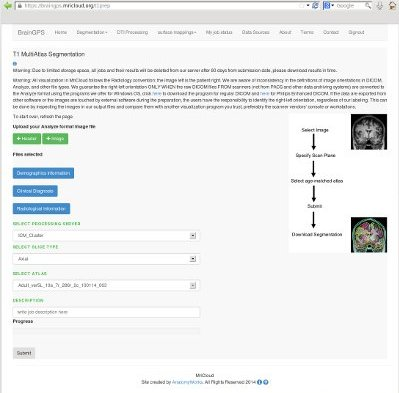
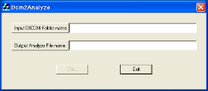

更多信息
请使用Dicom 转 Analyze格式转换器来实现转换。
更多信息
您可以选择云平台提供给您的合适的模板来处理您的图像，并为其增加一些可选的描述。
更多信息
预期数据吞吐率如下
更多信息

更多信息
更多信息

| 选择T1图像分割的流水线 | | |
DICOM 转 Analyze 格式转换器 | | |
指定要处理的MPRAGE文件 | | |
| 数据预处理 | | |
处理状态查询 | | |
下载处理结果 |
|
| 这个教程向我们展示了如何利用迈格云平台对MPRAGE扫描图像进行基于T1的286结构分割
| |||
| 选择T1图像分割的流水线 | 在您登陆了迈格云平台之后，选择“T1图像多图谱分割”下拉菜单，然后选择“T1多图谱分割”选项。 更多信息 |  | |
| DICOM 转 Analyze 格式转换器 | 迈格云平台处理Analyze格式图像 请使用Dicom 转 Analyze格式转换器来实现转换。 更多信息 |  | |
| 指定需要处理的MPRAGE图像 | 利用按钮选择需要进行处理的Analyze格式图像文件。 您可以选择云平台提供给您的合适的模板来处理您的图像，并为其增加一些可选的描述。 更多信息 | ||
| 开始处理 | 通过点击上传按钮，您的任务就将会上传到与平台中执行。 预期数据吞吐率如下 更多信息 | |
|
| 状态监视器 | 在上传完您的工作之后，您可以通过菜单中“我的工作状态”选项来检查自己提交任务的工作状态。 更多信息 | ||
| 下载处理结果 | 在您的所提交的执行任务结束后，一个下载按钮将会出现。您可以将迈格云平台所生成的zip压缩包格式的结果下载到您的电脑中。处理结果中不仅包含迈格云平台为您分割好的286结构信息，同时也包含这些结构的统计结果。 更多信息 | |
|